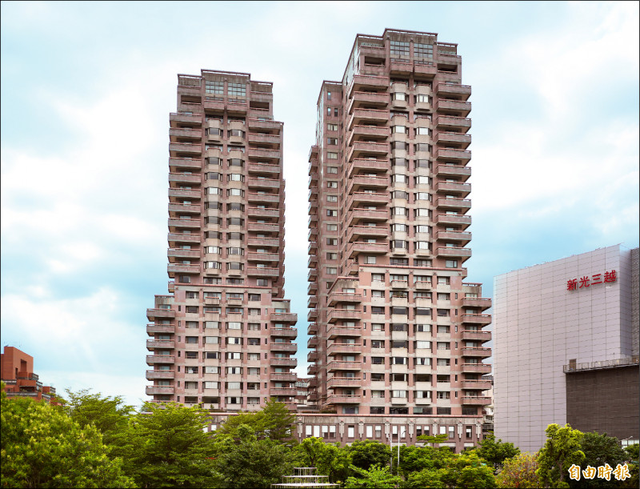
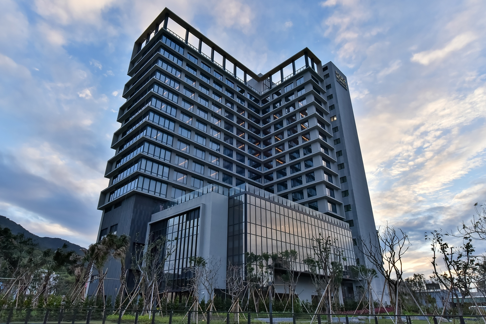
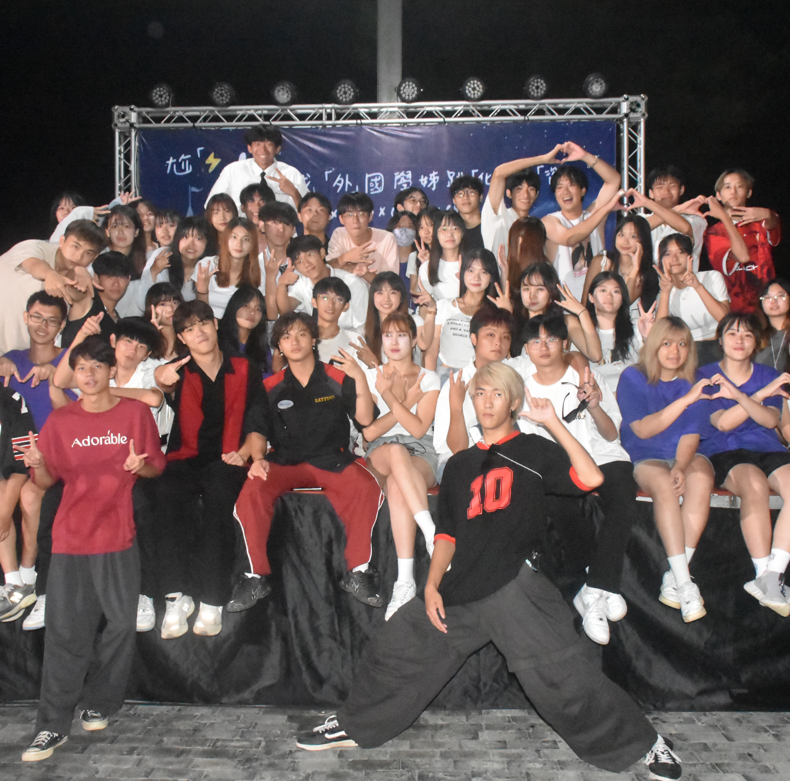
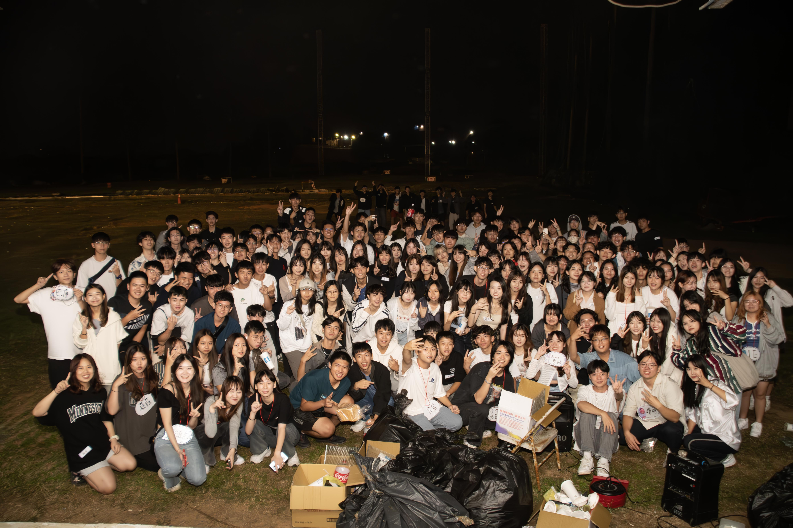
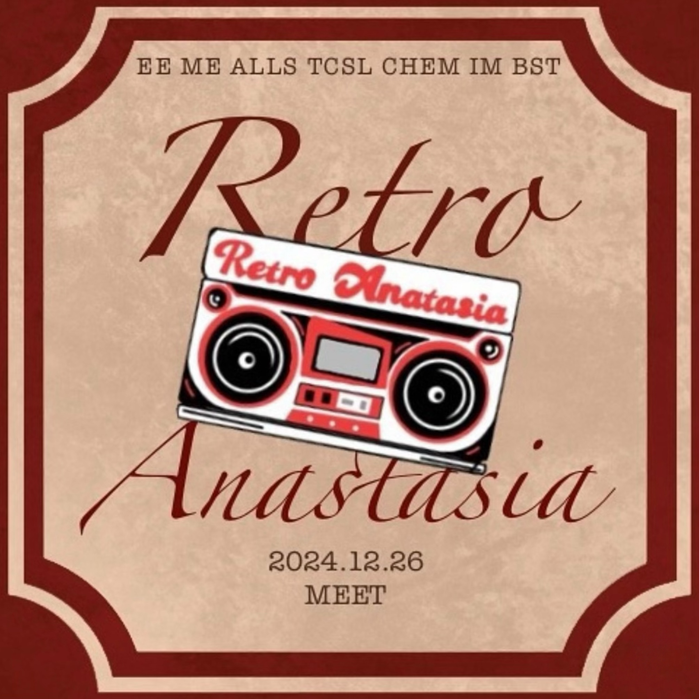

飯店櫃台是服務與管理的核心。櫃台人員需具備良好的溝通技巧、解決問題的能力，並時刻保持專業與親切的態度，為住客提供安心舒適的入住體驗，成為顧客對飯店的第一印象與關鍵接觸點。與此同時，由於在上班的時候會接觸到許多外國客人，這也讓我的外語溝通表達能力增強了許多！
王筱嵐‘s Profile
2005.03.06
New Taipei City, TW
CYCU, Information Management
個人特質：活潑開朗外向、健談、擅於帶來歡笑
"NEVER GIVE UP!!"
聯繫方式
EACH SKILLS
Language Skills
臺語
英文 TOEIC 595
韓文 TOPIK I
Professional Skills
影片剪輯
音樂剪輯
照片編輯
Program Skills
HTML
Python
JavaScript
EXPERIENCES
Work
- 天母傑仕堡——飯店櫃台
- 八里喜來登——自助餐PT
- 咖哩就好啦——內外場PT
- 飛騰補習班——招生PT


這份工作需要耐心和細心，不僅要迅速補充餐點及幫客人清理空盤，還需保持場地整潔。與顧客互動時，微笑和禮貌是關鍵，讓每位客人感到被尊重和滿意。
在咖哩店工作讓我深刻體會到顧客服務的重要性，從備料到上餐，每一步都必須謹慎。與客人互動增添了工作的樂趣，看著他們滿意離開，成就感十足。
擔任補習班招生人員，不僅需要良好的溝通技巧，還需深入了解學生需求與課程特色。透過專業的建議和真誠的關懷，協助學生找到適合的學習途徑，是充滿成就感的工作。
University

迎新宿營——隊輔組
參與四系聯合迎新宿營，為大一新生的大學生涯開啟了美好的新篇章。透過隊輔組的努力，我們在歡笑與挑戰中建立了深厚的友誼，攜手度過彼此初入大學的第一步。期待未來一同成長！這是我人生當中第一次堅持做一件事情那麼久 一個半月的時間，對於總是三分鐘熱度的我來說真的好久。沒參加過宿營的我，這一切對我而言都超級陌生，如同在進行一場未知的旅行一起朝著目的地前進。路途中遇到很多困難的關卡，但因為有大家的陪伴，我才能不後悔的一直走到最後！

系烤——活動組
參與四系聯合烤肉，與新認識的朋友們相約，共享中秋佳節的氛圍。在活動組的協助下，我們拓展了新的朋友圈，結識了來自不同系的朋友，度過了一個充滿歡笑與美食的夜晚。在練習的時候，每天練舞都超級辛苦，練習到很晚。隨著驗收時間的到來，進度依舊沒達成，但大家都很願意一直加練，甚至連國慶連假也不放過，全部都來練習...在最後系考結束也有感傷的念頭湧上心頭。

基北聯誼會——社團公關長
作為基北聯誼會的社團公關長，我有幸參與策劃並推動各項活動，促進社團間的交流合作。以及在處理社團帳號時，會遇到許多公關危機，這也讓我在處理事情方面更能靈機應變。在互動與分享中，不僅拓展了人脈，更收穫了寶貴的經驗和友誼。期待未來攜手共創更多精彩！

Retro Anastasia耶誕舞會——活動組
參與Retro Anastasia耶誕舞會，感受復古與重生的交融，象徵新開始與希望。Retro喚起舊回憶，Anastasia寓意重生。在寒冷的聖誕夜，與大家一同共享溫馨歡樂，迎接美好的未來！常常參加系上各種活動，平常又熱愛跳舞的我，耶舞這種活動再次表演對我來說，理應是件小事。完全不改嘗試這種爵士性感舞風的我，因為這個活動跨出了舒適圈，對我而言也是一大挑戰，但同時也很開心我跨出了這一步，發現了不同的自己！